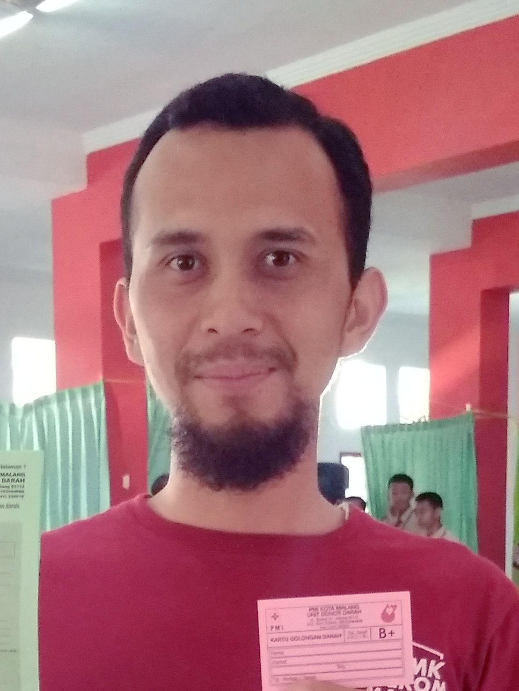

Adi Nurrachman S.T.
Produktif TKJ
Produktif TKJ
Produktif TKJ
Produktif TKJ
Bahasa Inggris
Tahfidz
Pend. Agama & Budi Pekerti
Pend. Pancasila (IPAS)
Bahasa Indonesia
Matematika
Pend. Jasmani & Kesehatan
| No. | Name | Gender | Nickname | City |
|---|---|---|---|---|
| 1 | Achmad Rafi Wijaya | Male | Rafi | Malang |
| 2 | Achmad Reihan Nur Aqila | Male | Reihan | Tuban |
| 3 | Agitha Clariza Aulia | Female | Agitha | Malang |
| 4 | Aisyah Nurul Ilmi Prianto | Female | Aisyah | Nganjuk |
| 5 | Akhsan Dian Hermansyah | Male | Akhsan | Blitar |
| 6 | Alif Rangga Skuravi | Male | Skurr | Jakarta |
| 7 | Annisa Rachmanti | Female | Annisa | Magetan |
| 8 | Areta Neila Putri | Female | Reta | Malang |
| 9 | Aryandika Ibrahim Wiyuda | Male | Kaka | Bogor |
| 10 | Astridia Veronic Zonna Basuki | Female | Astrid | Trenggalek |
| 11 | Chikalya Syifa Ramadhani | Female | Cipa | Kediri |
| 12 | Desy Dwi Puspita | Female | Desy | Blitar |
| 13 | Devinta Dwi Maharani | Female | Depinta | Trenggalek |
| 14 | Dito Wahyu Setyawan | Male | Dito | Mojokerto |
| 15 | Faris Elfata Aflah | Male | Paris | Kediri |
| 16 | Firman Yanitra Elramsyah | Male | Firman | Sidoarjo |
| 17 | Hilmi Rahmaniar Khonsa | Female | Niar | Mojokerto |
| 18 | Irfan Madhewa Putra Waskito | Male | Irpan | Madiun |
| 19 | Khaliqa Adin Laily Andrika Putri | Female | Khaliqa | Situbondo |
| 20 | M. Azwan Zulvan | Male | Julpan | Malang |
| 21 | Meera Shazvina | Female | Meera | Tulungagung |
| 22 | Moch.Raditya Nugroho | Male | Radit | Pasuruan |
| 23 | Moh Viko Nur Huda | Male | Viko | Nganjuk |
| 24 | Mohammad Farrel Hadyan | Male | Farrel | Malang |
| 25 | Mohammad Fildan Yusuf | Male | Fildan | Tulungagung |
| 26 | Muhammad Naufal Mathara R | Male | Nopal | Bontang |
| 27 | Muhammad Rangga Yuda | Male | Rangga | Beteleme |
| 28 | Nurfinka Lailasari | Female | Pinka | Malang |
| 29 | Oktavia Kusuma | Female | Via | Malang |
| 30 | Rico Shandika Jovial Agista | Male | Riko | Batu |
| 31 | Sefina Ahmada | Female | Sepina | Tulungagung |
| 32 | Tegar Dito Priandika | Male | Tegar | Malang |
| 33 | Tri Bagus Rahmad Zaelani | Male | Bagus | Tuban |
| 34 | Wrisa Karumia | Female | Riris | Kediri |
| 35 | Zaskia Navaputri Ramadhani | Female | Jaskia | Probolinggo |
| Jam | Senin | Selasa | Rabu | Kamis | Jumat |
|---|---|---|---|---|---|
| P1 | Produktif TKJ | Pend. Agama & Budi Pekerti | Produktif TKJ | ||
| P2 | Produktif TKJ | Produktif TKJ | Pend. Agama & Budi Pekerti | Produktif TKJ | Pend. Jasmani & Kesehatan |
| P3 | Produktif TKJ | Tahfidz | Pend. Pancasila (IPAS) | Matematika | Pend. Jasmani & Kesehatan |
| P4 | Produktif TKJ | Produktif TKJ | Pend. Pancasila (IPAS) | Matematika | Produktif TKJ |
| P5 | Bahasa Inggris | Produktif TKJ | Bahasa Indonesia | Matematika | Produktif TKJ |
| P6 | Bahasa Inggris | Produktif TKJ | Bahasa Indonesia | Produktif TKJ | Produktif TKJ |
| P7 | |||||
| P8 | Bahasa Inggris | Produktif TKJ | Bahasa Indonesia | Produktif TKJ | Produktif TKJ |
| P9 | Produktif TKJ | Produktif TKJ | Produktif TKJ | Produktif TKJ | Produktif TKJ |
| P10 | Produktif TKJ | Produktif TKJ | Produktif TKJ | Produktif TKJ | Produktif TKJ |